CAMSHAFT > REMOVAL |
| 1. DISCHARGE FUEL SYSTEM PRESSURE |
Discharge the fuel system pressure (Click here).
| 2. DISCONNECT CABLE FROM NEGATIVE BATTERY TERMINAL |
| 3. REMOVE FRONT FENDER SPLASH SHIELD SUB-ASSEMBLY LH |
 |
Remove the 3 bolts and screw.
Turn the clip indicated by the arrow in the illustration to remove the fender splash shield.
| 4. REMOVE FRONT FENDER SPLASH SHIELD SUB-ASSEMBLY RH |
| 5. REMOVE NO. 1 ENGINE UNDER COVER SUB-ASSEMBLY |
 |
Remove the 10 bolts and No. 1 engine under cover.
| 6. REMOVE NO. 2 ENGINE UNDER COVER |
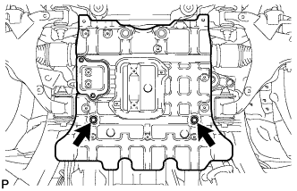 |
Remove the 2 bolts and No. 2 engine under cover.
| 7. DRAIN ENGINE COOLANT |

Loosen the radiator drain cock plug.
Remove the radiator cap. Then drain the coolant.
Loosen the 2 cylinder block drain cock plugs. Then drain the coolant from the engine.
Tighten the 2 cylinder block drain cock plugs.
Tighten the radiator drain cock plug by hand.
| 8. DRAIN ENGINE OIL |
 |
Remove the oil drain plug and gasket, and drain the engine oil into a container.
| 9. REMOVE V-BANK COVER SUB-ASSEMBLY |
 |
Remove the 2 nuts and V-bank cover.
| 10. REMOVE AIR CLEANER HOSE ASSEMBLY |
 |
Disconnect the vacuum transmitting hose and No. 2 ventilation hose.
Loosen the 2 hose clamps.
Remove the air cleaner hose.
| 11. REMOVE AIR CLEANER ASSEMBLY |
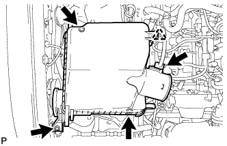 |
Disconnect the clamp and MAF connector.
Remove the 3 bolts and air cleaner.
| 12. REMOVE IGNITION COIL ASSEMBLY |
 |
Disconnect the 8 ignition coil connectors.
Remove the 8 bolts and pull out the 8 ignition coils.
| 13. REMOVE SPARK PLUG |
Remove the 8 spark plugs.
| 14. REMOVE NO. 1 RADIATOR HOSE |
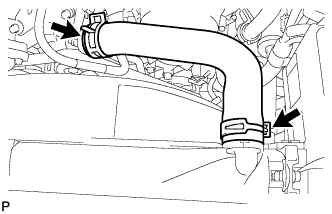 |
Using needle-nose pliers, grip the claws of the clamps and slide the clamps to remove the radiator hose.
| 15. REMOVE FAN AND GENERATOR V BELT |
 |
Loosen the belt tension by turning the belt tensioner counterclockwise, and then remove the fan and generator V belt.
| 16. REMOVE FAN SHROUD |
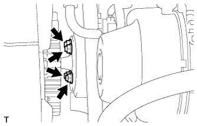 |
Loosen the 4 nuts holding the cooling fan.
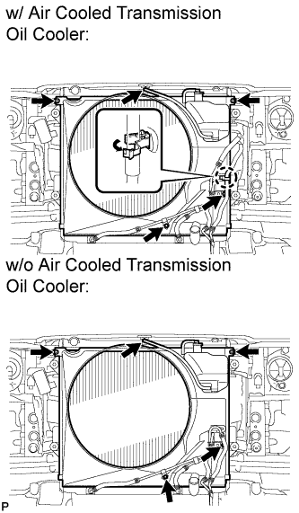 |
Disconnect the reservoir hose from the upper side of the radiator tank.
w/ Air Cooled Transmission Oil Cooler:
Detach the claw to open the flexible hose clamp.
Remove the 2 bolts and disconnect the oil cooler tube from the fan shroud.
Remove the 2 bolts holding the fan shroud.
Remove the 4 nuts of the cooling fan, and then remove the shroud together with the cooling fan.
Remove the fan pulley from the water pump.
| 17. REMOVE NO. 2 RADIATOR HOSE |
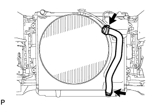 |
Using needle-nose pliers, grip the claws of the clamps and slide the clamps to remove the radiator hose.
| 18. REMOVE FRONT FENDER APRON SEAL LH |
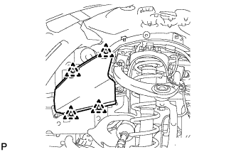 |
Using a clip remover, remove the 4 clips and fender apron seal.
| 19. REMOVE FRONT FENDER APRON SEAL LH (w/ KDSS) |
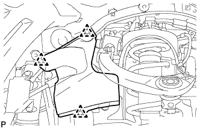 |
Using a clip remover, remove the 3 clips and fender apron seal.
| 20. REMOVE FRONT FENDER APRON SEAL FRONT RH |
 |
Using a clip remover, remove the 3 clips and fender apron seal.
| 21. DISCONNECT COOLER COMPRESSOR ASSEMBLY |
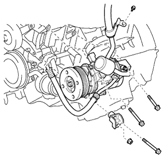 |
Disconnect the connector.
Remove the bolt. Then disconnect the cooler refrigerant suction hose from the cylinder head cover.
Remove the 3 bolts, nut and No. 1 compressor stay and disconnect the cooler compressor.
| 22. DISCONNECT VANE PUMP ASSEMBLY |
 |
Disconnect the connector.
 |
Remove the 2 bolts and nut. Then disconnect the vane pump.
| 23. REMOVE GENERATOR ASSEMBLY |
 |
Disconnect the generator connector.
Remove the terminal cap and nut, and disconnect the generator wire.
Remove the bolt and disconnect the wire harness bracket from the generator.
 |
Remove the bolt, 2 nuts and generator.
| 24. REMOVE OIL COOLER PIPE |
 |
Remove the cap nut and bolt.
Using needle-nose pliers, grip the claws of the clamps and slide the clamps to disconnect the 3 water by-pass hoses and remove the oil cooler pipe.
| 25. REMOVE NO. 2 IDLER PULLEY SUB-ASSEMBLY |
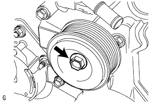 |
Remove the pulley bolt, cover plate and idler pulley.
| 26. REMOVE NO. 3 TIMING BELT COVER SUB-ASSEMBLY LH |
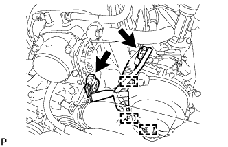 |
Detach the 3 wire clamps and disconnect the camshaft timing oil control valve connector and control motor connector.
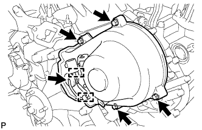 |
Disconnect the camshaft position sensor connector.
Disconnect the camshaft position sensor wire from the 2 wire clamps on the timing belt cover.
Remove the wire grommet from the timing belt cover.
Remove the 4 bolts.
Pull the cover outward, pull the camshaft position sensor wire out of the cover, and remove the cover.
| 27. REMOVE NO. 3 TIMING BELT COVER SUB-ASSEMBLY RH |
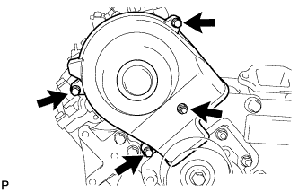 |
Remove the 3 bolts, nut and timing belt cover.
| 28. REMOVE NO. 2 TIMING BELT COVER SUB-ASSEMBLY |
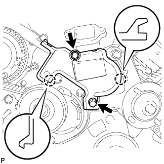 |
Remove the 2 bolts and detach the 2 claws, and then remove the No. 2 timing belt cover.
| 29. REMOVE V-RIBBED BELT TENSIONER ASSEMBLY |
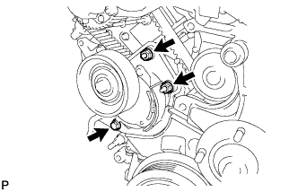 |
Remove the bolt, 2 nuts and V-ribbed belt tensioner.
| 30. REMOVE FAN BRACKET SUB-ASSEMBLY |
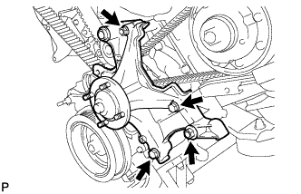 |
Remove the 2 nuts, 2 bolts and fan bracket.
| 31. REMOVE CRANKSHAFT DAMPER SUB-ASSEMBLY |
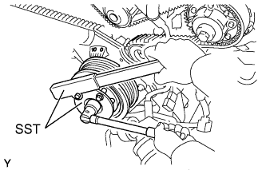 |
Using SST, hold the crankshaft damper and loosen the pulley bolt. Further loosen the bolt until 2 or 3 threads are screwed into the crankshaft.
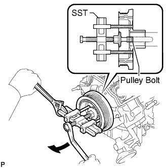 |
Using SST and the pulley bolt, remove the crankshaft damper.
| 32. REMOVE NO. 1 TIMING BELT COVER |
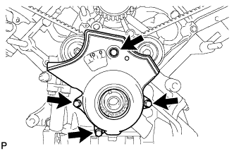 |
Remove the 4 bolts and timing belt cover.
| 33. REMOVE TIMING BELT COVER SPACER |
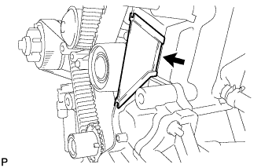 |
Remove the cover spacer and gasket.
| 34. REMOVE NO. 1 CRANKSHAFT POSITION SENSOR PLATE |
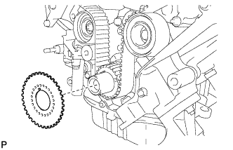 |
Remove the position sensor plate from the crankshaft.
| 35. SET NO. 1 CYLINDER TO TDC/COMPRESSION |
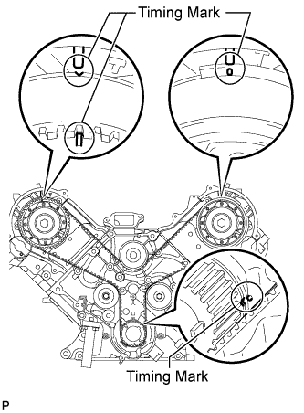 |
Temporarily install the pulley bolt.
Rotate the crankshaft clockwise so that the timing marks on the crankshaft timing pulley and camshaft timing pulleys are as shown in the illustration.
| 36. REMOVE TIMING BELT |
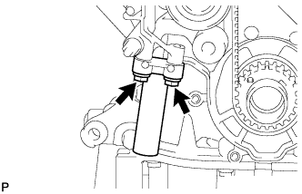 |
Alternately loosen the 2 bolts, then remove the bolts, timing belt tensioner and dust seal.
Remove the timing belt.
| 37. DISCONNECT WATER HOSE SUB-ASSEMBLY |
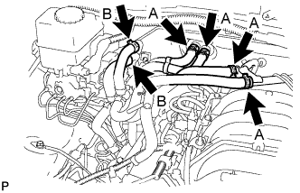 |
Disconnect the water by-pass hose.
w/ Rear Heater:
Disconnect the water hoses labeled A and B.
w/o Rear Heater:
Disconnect the water hoses labeled A.
| 38. DISCONNECT NO. 1 WATER BY-PASS PIPE (w/ Air Cooled Transmission Oil Cooler) |
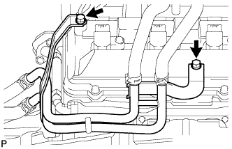 |
Remove the 2 bolts. Then disconnect the water by-pass pipe from the cylinder head cover RH.
| 39. REMOVE NO. 2 FUEL HOSE |
for engine side:
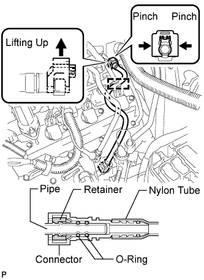 |
Detach the fuel hose clamp.
Detach the lock claw by lifting up the cover, as shown in the illustration.
Pinch and pull the No. 2 fuel hose connector to disconnect the connector from the No. 3 fuel pipe.
for body side:
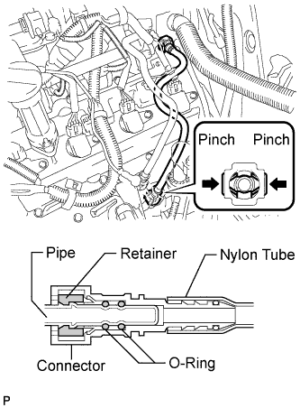 |
Pinch and pull the No. 2 fuel hose connector to disconnect the connector from the fuel pipe.
| 40. DISCONNECT FUEL HOSE |
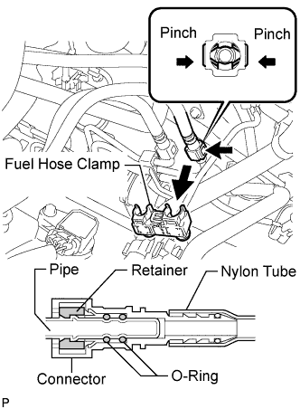 |
Remove the fuel hose clamp.
Pinch and pull the fuel hose connector to disconnect the connector from the fuel pipe.
| 41. REMOVE FUEL PRESSURE PULSATION DAMPER ASSEMBLY |
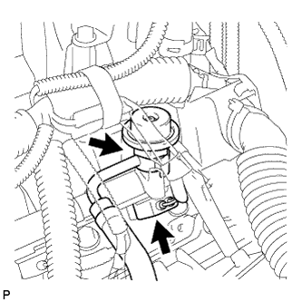 |
Disconnect the fuel injector connector.
Remove the pulsation damper, upper gasket, fuel hose and lower gasket.
| 42. SEPARATE WIRE HARNESS |
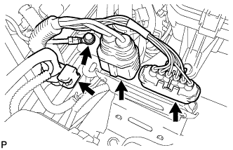 |
Disconnect the 2 air injection control driver connectors.
Remove the bolt and disconnect the ground wire.
Disconnect the wire harness clamp.
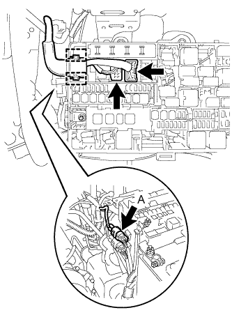 |
Disconnect the 2 clamps and 2 connectors from the engine room relay block.
Disconnect connector A from the engine room relay block.
Disconnect the wire harness clamp from the cylinder head cover LH.
| 43. REMOVE NO. 1 VENTILATION HOSE |
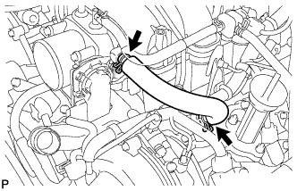 |
Remove the No. 1 ventilation hose from the intake manifold and ventilation valve.
| 44. REMOVE CYLINDER HEAD COVER SUB-ASSEMBLY |
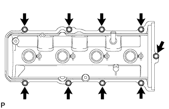 |
Remove the 9 bolts, cylinder head cover and gasket.
| 45. REMOVE CYLINDER HEAD COVER SUB-ASSEMBLY LH |
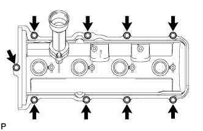 |
Remove the 9 bolts, cylinder head cover and gasket.
| 46. REMOVE SPARK PLUG TUBE GASKET |
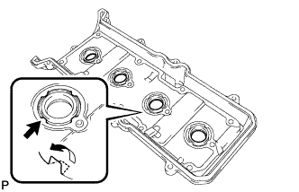 |
Bend the 8 ventilation case claws of the cylinder head cover to an angle of 90° or more.
Using a screwdriver, pry out the gaskets.
| 47. REMOVE SEMICIRCULAR PLUG |
Remove the 4 semicircular plugs from the cylinder heads.
| 48. REMOVE CAMSHAFT POSITION SENSOR ASSEMBLY |
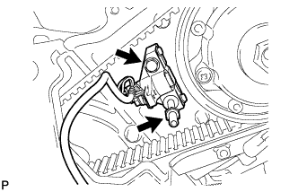 |
Remove the bolt, stud bolt and camshaft position sensor.
| 49. REMOVE CAMSHAFT TIMING PULLEY |
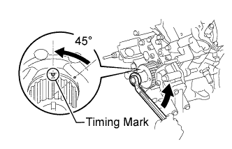 |
Using the pulley set bolt, turn the crankshaft counterclockwise by approximately 45°.
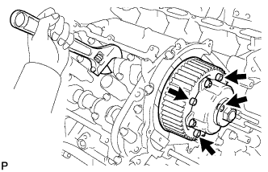 |
Hold the hexagonal portion of the camshaft with a wrench and remove the 4 bolts indicated by the arrows in the illustration and timing pulley.
| 50. REMOVE CAMSHAFT TIMING PULLEY SUB-ASSEMBLY LH |
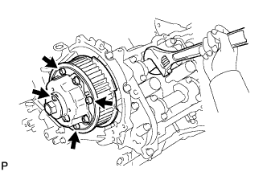 |
Hold the hexagonal portion of the camshaft with a wrench and remove the 4 bolts indicated by the arrows in the illustration and timing pulley.
| 51. REMOVE REAR NO. 2 TIMING BELT PLATE RH |
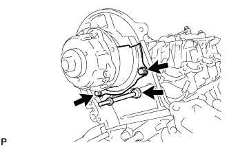 |
Remove the 2 bolts, stud bolt and timing belt plate.
| 52. REMOVE REAR NO. 2 TIMING BELT PLATE LH |
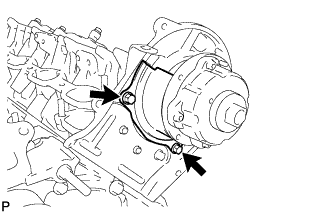 |
Remove the 2 bolts and timing belt plate.
| 53. REMOVE CAMSHAFT (for Bank 1) |
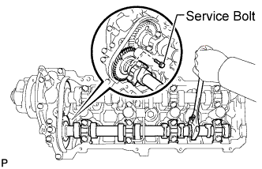 |
Bring the service bolt hole of the sub-gear upward by turning the hexagonal portion of the exhaust camshaft with a wrench.
Secure the sub-gear to the driven gear with a service bolt.
| Thread Diameter | Thread Pitch | Bolt Length |
| 6.0 mm | 1.0 mm | 16 to 20 mm (0.630 to 0.787 in.) |
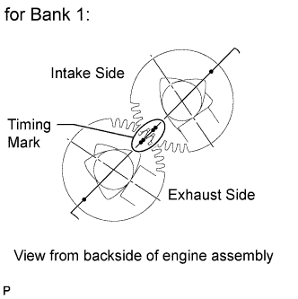 |
Using a wrench, turn the camshaft so that the timing marks (2 dot marks each) on the camshaft drive and driven gears are aligned, as shown in the illustration.
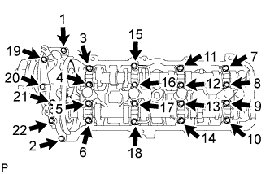 |
Uniformly loosen and remove the 22 bearing cap bolts in several steps, in the order shown in the illustration.
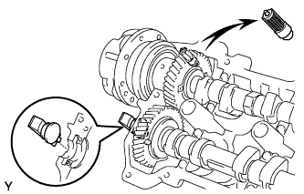 |
Remove the cap bolts, 4 seal washers, oil feed pipe, 9 bearing caps, camshaft housing plug, oil control valve filter and camshafts.
| 54. REMOVE CAMSHAFT (for Bank 2) |
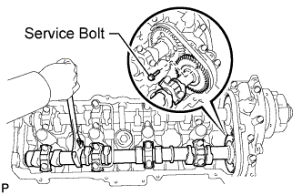 |
Bring the service bolt hole of the sub-gear upward by turning the hexagonal portion of the exhaust camshaft with a wrench.
Secure the sub-gear to the driven gear with a service bolt.
| Thread Diameter | Thread Pitch | Bolt Length |
| 6.0 mm | 1.0 mm | 16 to 20 mm (0.630 to 0.787 in.) |
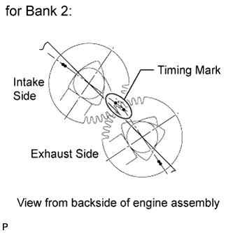 |
Using a wrench, turn the camshaft so that the timing marks (1 dot mark each) on the camshaft drive and driven gears are aligned, as shown in the illustration.
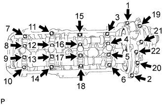 |
Uniformly loosen and remove the 22 bearing cap bolts in several steps, in the order shown in the illustration.
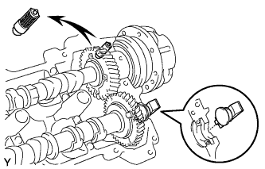 |
Remove the cap bolts, 4 seal washers, oil feed pipe, 9 bearing caps, camshaft housing plug, oil control valve filter and camshafts.
| 55. INSPECT CAMSHAFT TIMING TUBE ASSEMBLY |
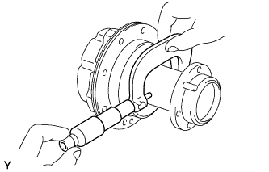 |
Using a micrometer, measure the journal diameter.
Install the camshaft timing tube to the camshaft (Click here).
Check the lock of the camshaft timing tube.
Check that the camshaft timing tube is locked.
Release the lock pin.
Clean the camshaft timing tube journal with non-residue solvent.
Wrap tape around the entire journal to block the 4 oil holes as shown in the illustration.
Open a hole in the tape at 2 places, one in the retard side oil hole and one in the advance side oil hole as shown in the illustration.
Apply approximately 200 kPa (2.0 kgf/cm2, 29 psi) of air pressure to the 2 open oil holes (the advance side oil hole and the retard side oil hole).
Check that the camshaft timing tube revolves in the advance direction when reducing the air pressure applied to the retard side oil hole.
When the camshaft timing tube reaches the most advanced position, release the air pressure from the retard side oil hole and advance side oil hole, in that order.
Check for smooth rotation.
Apply 60 kPa (0.6 kgf/cm2, 8.7 psi) of air pressure to the retard side oil hole to release the lock pin.
Turn the camshaft timing tube within its movable range (21°) 2 or 3 times, but do not turn it to the most retarded position. Make sure that the camshaft timing tube turns smoothly.
Check the lock in the most retarded position.
Confirm that the camshaft timing tube is locked at the most retarded position.
Remove the camshaft timing tube (Click here).
| 56. REMOVE CAMSHAFT TIMING TUBE ASSEMBLY |
Mount the hexagonal portion of the camshaft in a vise.
Remove the screw plug and seal washer.
Using a 10 mm hexagon wrench, remove the bolt and timing tube.
| 57. REMOVE CAMSHAFT DRIVE GEAR |
Using SST and a 5 mm hexagon wrench, remove the 4 bolts, drive gear and oil seal.
| 58. REMOVE CAMSHAFT SUB-GEAR |
Mount the hexagonal portion of the camshaft in a vise.
Using SST, turn the sub-gear clockwise, and remove the service bolt.
Using snap ring pliers, remove the snap ring.
Remove the wave washer, sub-gear and gear spring.